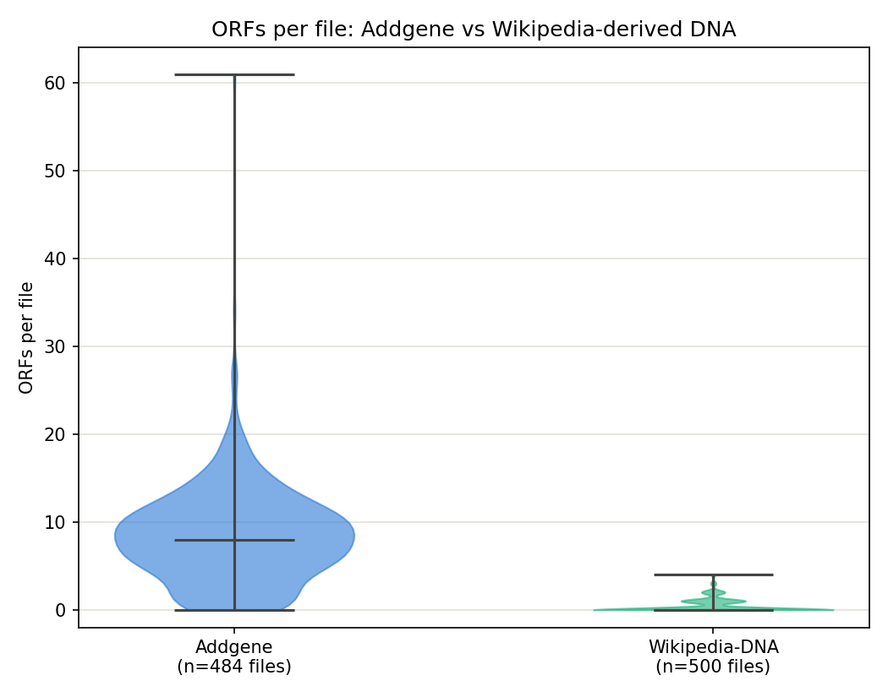
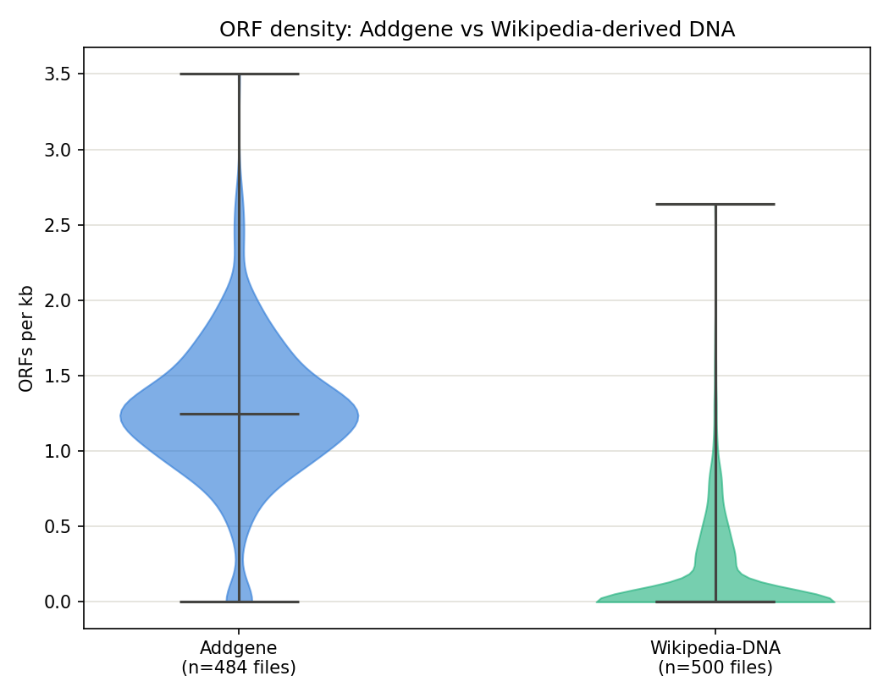
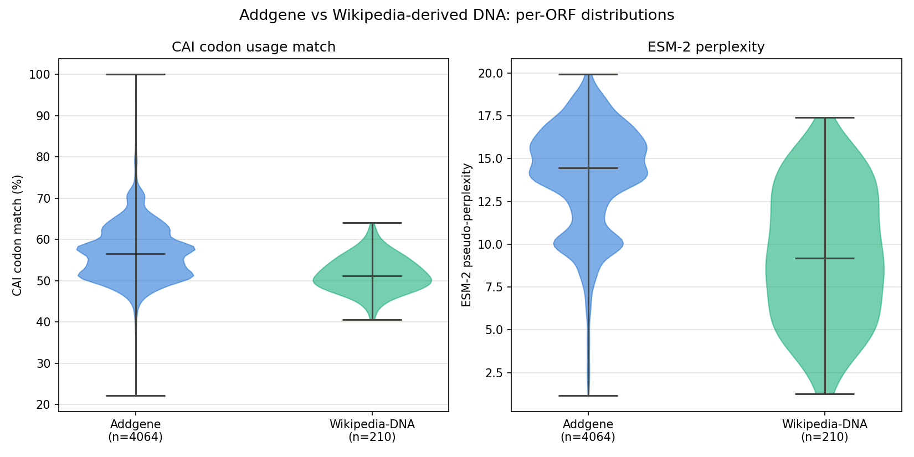
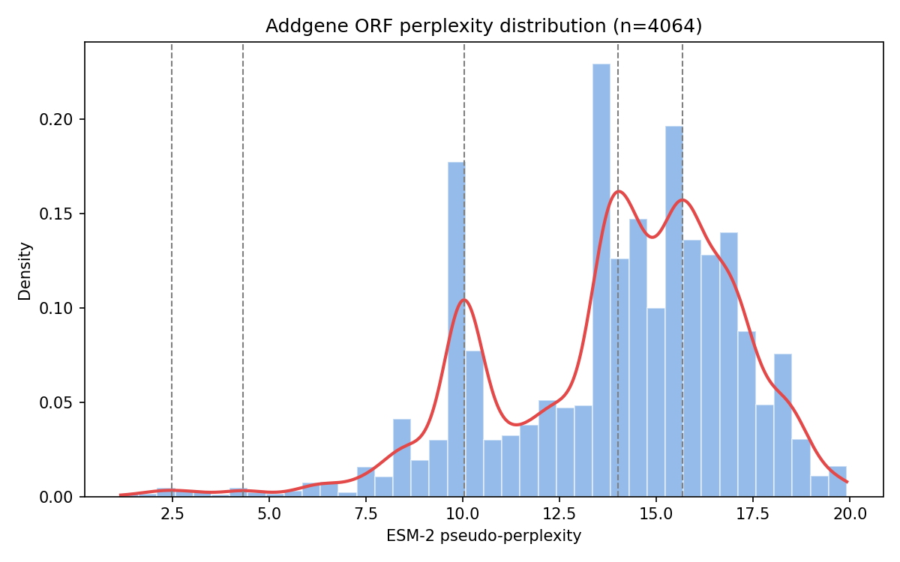
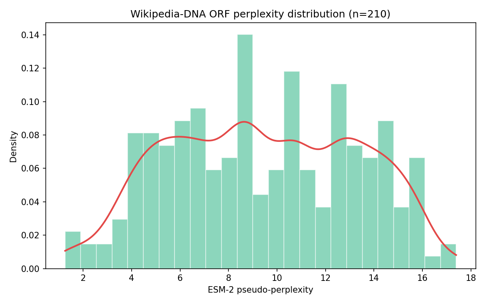
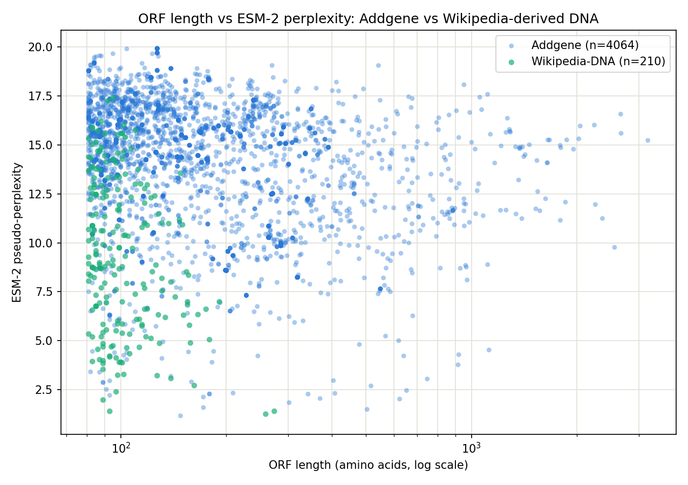
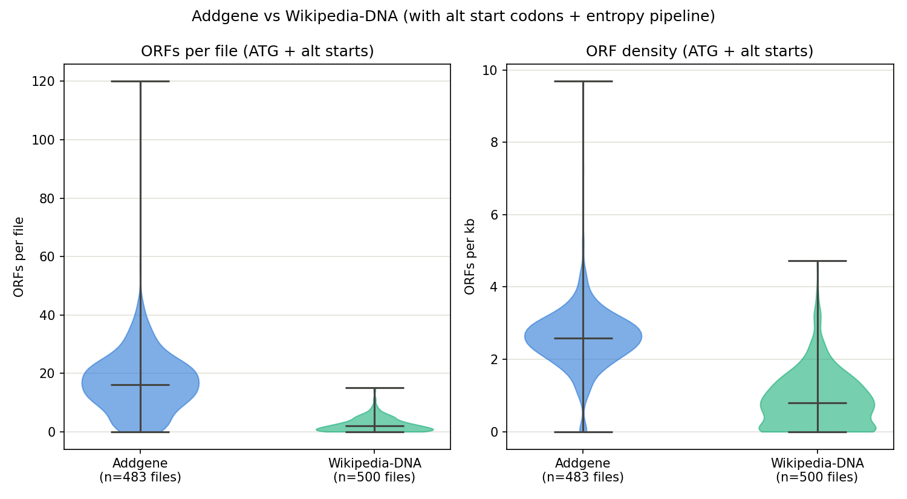
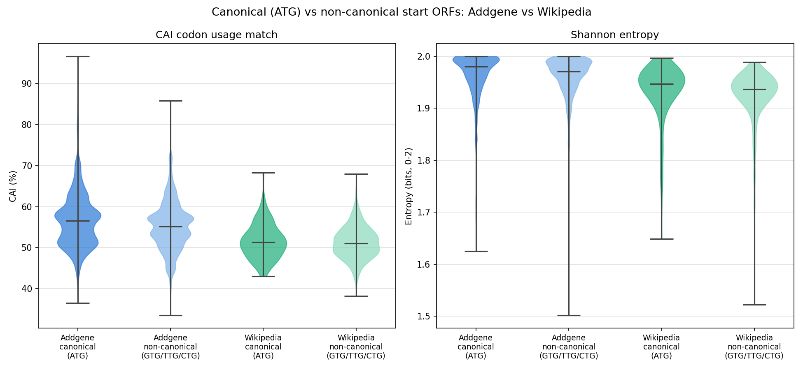
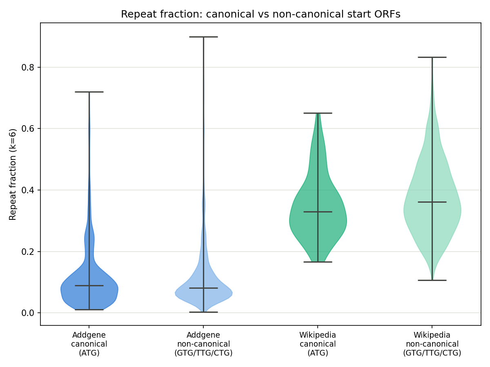

Tessa Alexanian asked on X how to easily differentiate biologic DNA from abiologic DNA (i.e., DNA data storage, DNA origami) if someone orders a DNA sequence, and collected possible options here. I decided to test out some of the ideas. I used a two-trial investigation using six-frame ORF finding, codon adaptation index (CAI), an ESM-2 protein language model, and sequence-complexity metrics (Shannon entropy and k-mer repeat content), applied to real Addgene plasmid sequences and to DNA generated by 2-bit-encoding random Wikipedia article text, a stand-in for DNA data storage.1,2
Why do this? Well, DNA synthesis companies want to screen DNA that people order for potentially dangerous sequences. But now, AI can design toxic proteins with high structural homology to existing toxins (i.e. it acts like a toxin), but low sequence homology (i.e. the DNA does not look like a toxin). This requires more intensive (and computationally expensive) screening to catch and doing this for every order may not be feasible. If a pre-screening pipeline could definitively state that DNA is abiologic (i.e. for DNA data storage), then screening of that sequence could stop there saving the more intense screening for biologic DNA.
TL;DR
Five metrics were tried across two trials. ORF density, as expected, provided the best differentiation. Real plasmids contain far more open reading frames than text-derived DNA, in both versions of the analysis. k-mer repeat content is also a good metric: text-derived DNA is much more repetitive than biologic DNA due to the patterns of language. CAI (codon usage bias) is distinct between the datasets but notably, Wikipedia-derived DNA still averages just above 50% CAI match to E. coli, which tempers how much weight codon bias alone can carry as a biologic/abiologic signal. Shannon entropy, as implemented here, was not useful for this purpose. This is unsurprising in hindsight, since both real and text-derived DNA use all four bases at close to equal frequency. And ESM-2 perplexity does not cleanly separate biologic from abiologic DNA either — Wikipedia-derived ORFs did not score reliably worse (more "non-protein-like") than real plasmid ORFs on average. Why exactly this happened requires more investigation, but may be a limitation of the model I used.
Methodology
Datasets
- Addgene (real DNA): plasmid sequences pulled from Addgene's official Developers Portal API (a bulk plasmids-with-sequences endpoint), randomly sampled down to ~500 records, and converted to individual FASTA files.
- Wikipedia-derived DNA (synthetic/random DNA): plain-text article extracts from random Wikipedia articles, converted to binary (UTF-8, 8 bits/byte), then mapped to nucleotides with a fixed 2-bit code (A=00, C=01, G=10, T=11), cut to a random length between 300 and 5,000 bp per article. This has no biological origin and instead mimics DNA data storage projects.
Two independent batches of each dataset were generated and analyzed at different points ("Trial 1" and "Trial 2" below); file counts differ slightly between trials because of how random sampling and file-parsing failures landed each time (Addgene: 484 files in Trial 1, 483 in Trial 2; Wikipedia: 500 files in both).
ORF finding
Both trials use a 6-frame open reading frame search (3 forward frames, 3 reverse-complement frames). An ORF is defined as a run from a start codon to the next in-frame stop codon (TAA/TAG/TGA), and only ORFs translating to more than 80 amino acids are kept — this is similar to NCBI ORFinder's default behavior.
- Trial 1 used ATG as the only valid start codon.
- Trial 2 additionally searched for the common bacterial alternative start codons GTG, TTG, and CTG. For these, the first residue is still reported as methionine (M), as the ribosome loads an initiator Met-tRNA at the start codon regardless of which codon is used.3
Codon Adaptation Index (CAI)
Each ORF's own codon usage is compared against a real reference table for E. coli (strain W3110, Kazusa Codon Unsage Database, 4,332 CDS's / 1,372,057 codons). CAI is reported as a percentage, where 100% means every codon in the ORF is E. coli's single most-preferred synonymous codon for that amino acid. It is a measure of how "E. coli-like" a sequence's codon choices are, not a measure of protein quality or authenticity in general. Notably, the Addgene plasmids were not restricted to those for bacterial expression or only carrying E. coli genes.
ESM-2 perplexity (Trial 1 only)
Each candidate protein was scored with ESM-2 (facebook/esm2_t6_8M_UR50D), a protein language model trained on real protein sequences.4 We report a pseudo-perplexity: each residue is masked one at a time, the model predicts it from context, and the negative log-likelihoods are averaged and exponentiated.5 Lower perplexity means the model finds a sequence more consistent with real proteins it was trained on.
Shannon entropy and k-mer repeat fraction (Trial 2 only)
Trial 2 drops ESM-2 (no GPU/model download required) and adds two sequence-complexity checks, computed both for each whole input sequence and for each individual ORF:
- Shannon entropy: an order-0 measure based only on overall A/C/G/T frequency (0–2 bits; 2.0 = perfectly even base composition). Important caveat: this formula is blind to sequence order.
- k-mer repeat fraction (k=6): the fraction of 6-mers in a sequence that are repeats of a 6-mer seen earlier in that same sequence. This is the metric that actually captures repetitiveness/low-complexity content, complementing entropy's blind spot.
Code and AI disclosure
The code used for these analyses can be found here. Both the code, results visualization, and writing of this document were assisted by Claude Sonnet 5.0.
Trial 1: ORF Density, CAI, and ESM-2 Perplexity
ORF counts and density
Real plasmids contain far more ORFs than text-derived DNA, both in raw count and normalized by length:


Codon usage and perplexity

CAI is informative here — Addgene sits higher and wider (mean 56.9%, median 56.6%) than Wikipedia (mean 51.7%, median 51.2%). Wikipedia-derived DNA, which has no biological origin whatsoever, still lands just above 50% CAI match on average, which is fairly surprising. It is unlikely that this metric is useful since many Addgene plasmids do not contain E. coli genes. So while this differentiates the two groups at a bulk level, the overlapped distributions make it less useful for differentiating a single sequence.
ESM-2 perplexity gave confusing results. Wikipedia's ORFs (mean perplexity 9.43) actually score lower, i.e., more "protein-like" by the model's own metric, than Addgene's real ORFs (mean 13.99) on average. Read naively, that would suggest text-derived DNA looks more like a real protein than real plasmid DNA does, which is not a sound conclusion. The more defensible read is that ESM-2 perplexity, at least at this model size and scoring approach, is not a reliable dataset-level biologic/abiologic classifier.
A closer look at Addgene's bimodal perplexity
The two-lobed shape in Figure 3 turned out to be real, not a plotting artifact. A kernel density estimate over all 4,064 Addgene ORFs identifies two genuine modes, a smaller one around perplexity ≈ 10 (22.0% of ORFs) and a larger one around ≈ 14–16 (78.0%), separated by a valley (density drops to 23–36% of the peak heights at perplexity ≈ 11.4).


Splitting Addgene's ORFs at the valley (perplexity = 11.38) and comparing the two groups confirms these are meaningfully different populations, not sampling noise:
| Group | n | % of ORFs | Median length (aa) | Mean CAI (%) |
|---|---|---|---|---|
| Low-perplexity mode (< 11.38) | 894 | 22.0% | 286 | 59.1 |
| High-perplexity mode (≥ 11.38) | 3,170 | 78.0% | 127 | 56.3 |
Both differences are significant (Mann-Whitney U, length p = 2.2×10⁻¹²⁵; CAI p = 6.0×10⁻⁴⁶). The low-perplexity mode is made of substantially longer ORFs with modestly higher codon bias — consistent with genuine coding sequence (resistance markers, proteins to be expressed, other real genes). The high-perplexity majority has a median length of just 127 aa, quite short for a real protein and thus consistent with ORFs that arise by chance in non-coding backbone DNA.
Does ORF length predict perplexity directly?

Both datasets show a modest negative correlation between length and perplexity (Addgene: Spearman ρ = −0.29, p = 8.1×10⁻⁸¹; Wikipedia: ρ = −0.25, p = 3.0×10⁻⁴). Length is a contributing factor to perceived protein-likeness in both, but far from the whole story — there is substantial independent variation in perplexity at any given length.
A caveat worth naming: model size
All Trial 1 scoring used facebook/esm2_t6_8M_UR50D, the smallest available ESM-2 checkpoint (8M parameters). Larger ESM-2 models (35M up to 15B parameters) are documented to capture real-protein statistics more accurately, and would plausibly show a sharper separation between the two modes than what we observed here. I did not have the ability to test this within the current environment; it's a reasonable next step for anyone looking to firm up these findings.
Trial 2: Alternative Start Codons, Entropy, and Repeat Content
Trial 2 reran the analysis on freshly generated datasets, searching for ATG plus the alternative bacterial start codons GTG, TTG, and CTG, and replacing ESM-2 with two lightweight sequence-complexity checks (Shannon entropy and k-mer repeat fraction). Because more start codons mean more opportunities for any given stretch of DNA to qualify as an ORF, raw counts here are not directly comparable to Trial 1's ATG-only numbers.
ORF counts and density, revisited

Canonical vs. non-canonical starts
71.8% of Addgene's ORFs and 87.6% of Wikipedia's used a non-canonical (non-ATG) start codon — alternative starts account for the majority of ORFs in both datasets once they're allowed. Splitting each dataset by start-codon type shows a small effect:


Whole-sequence Shannon entropy is nearly identical between the two datasets (Addgene 1.993 bits, Wikipedia 1.954 bits, out of a max of 2.0) — both are close to perfectly balanced in raw base composition, because this order-0 formula only checks whether A/C/G/T proportions are roughly even, and says nothing about repetition or structure. The k-mer repeat fraction tells a different story: Addgene sequences are only about 50% repeat-content on average (whole-sequence), while Wikipedia-derived sequences are about 68–69%. This makes sense given how the Wikipedia dataset was built: English text has letter-frequency skew and recurring short patterns (common words, spacing) that get carried through the fixed 2-bit encoding into detectable nucleotide-level repetition, even though the overall base composition still comes out close to even.
Limitations
- ESM-2 scoring used the smallest available checkpoint (8M parameters); it's possible a larger model would behave differently as a classifier, but that was not tested here, and the bimodal structure found within Addgene should not be over-read as validating ESM-2's use for this purpose more broadly.
- Wikipedia's 210 surviving ORFs (Trial 1) is a modest sample for kernel-density mode detection compared to Addgene's 4,064; the "no bimodality" finding for Wikipedia should be held a bit more loosely than Addgene's confirmed bimodality.
- Shannon entropy as implemented here is an order-0 measure and was not sensitive enough to distinguish these datasets; a higher-order variant (e.g., over dinucleotides or codons) might behave differently but was not tested.
- The k-mer repeat fraction (k=6 default) is a fast, simple repetitiveness proxy, not a rigorous tandem-repeat caller; specific repeat units or microsatellite structure would need a dedicated tool.
- Trial 1 and Trial 2 used different Addgene/Wikipedia sample draws and different start-codon rules, so raw ORF counts are not directly comparable across trials.
Discussion: Ranking the Metrics
- ORF density (strongest): consistently 3–8x higher in real plasmids, in both trials, regardless of which start codons are allowed. If you only had one metric to use, this is the one.
- k-mer repeat fraction (strong, and orthogonal to ORF-based metrics): Wikipedia-derived DNA is roughly 3x more repetitive at the sequence level than Addgene, independent of ORF content or start-codon type. Because it doesn't depend on finding ORFs at all, it's a genuinely independent line of evidence from the first.
- CAI (moderately useful): consistently higher in Addgene by 4–6 percentage points, but Wikipedia-derived DNA still averages just above 50% CAI match to E. coli. That means CAI alone is better treated as weak-to-moderate evidence than as a reliable classifier. Would be enriched by checking CAI for other common expression models as well.
- Shannon entropy (not useful here): both datasets sit close to the maximum 2.0 bits, because both use all four bases at close to equal frequency. An unsurprising result, since order-0 entropy was never going to be sensitive to anything beyond raw base composition. It added essentially no discriminative signal in either trial.
- ESM-2 perplexity (least reliable as a biologic/abiologic classifier): Wikipedia's ORFs did not score consistently worse than Addgene's — if anything, Wikipedia's mean perplexity was lower (more "protein-like") than Addgene's. It did reveal a real bimodal split within Addgene itself, where the lower-perplexity mode corresponded to longer, higher-CAI ORFs, likely real proteins. That's an interesting internal-structure finding, but it did not translate into a trustworthy dataset-vs-dataset signal.
For anyone wanting to distinguish real biological sequence from synthetic/random DNA cheaply, ORF density and k-mer repeat content are doing essentially all of the useful work. CAI adds a smaller amount of corroborating evidence. Shannon entropy (at least the order-0 version used here) and ESM-2 perplexity (at least at this model size, used as a between-dataset comparison) are not pulling their weight, despite both being intuitively appealing metrics.
References
- 1.Gervasio, J. H. D. B.; da Costa Oliveira, H.; da Costa Martins, A. G.; Pesquero, J. B.; Verona, B. M.; Cerize, N. N. P. How Close Are We to Storing Data in DNA? Trends in Biotechnology 2024, 42 (2), 156–167. https://doi.org/10.1016/j.tibtech.2023.08.001.
- 2. Startup Catalog has jammed all 16GB of Wikipedia's text onto DNA strands. CNET. cnet.com (accessed 2026-07-17).
- 3. Peabody, D. S. Translation Initiation at Non-AUG Triplets in Mammalian Cells. J Biol Chem 1989, 264 (9), 5031–5035.
- 4. Lin, Z.; Akin, H.; Rao, R.; Hie, B.; Zhu, Z.; Lu, W.; Smetanin, N.; Verkuil, R.; Kabeli, O.; Shmueli, Y.; dos Santos Costa, A.; Fazel-Zarandi, M.; Sercu, T.; Candido, S.; Rives, A. Evolutionary-Scale Prediction of Atomic-Level Protein Structure with a Language Model. Science 2023, 379 (6637), 1123–1130. https://doi.org/10.1126/science.ade2574.
- 5. Salazar, J.; Liang, D.; Nguyen, T. Q.; Kirchhoff, K. Masked Language Model Scoring. In Proceedings of the 58th Annual Meeting of the Association for Computational Linguistics; Jurafsky, D., Chai, J., Schluter, N., Tetreault, J., Eds.; Association for Computational Linguistics: Online, 2020; pp 2699–2712. https://doi.org/10.18653/v1/2020.acl-main.240.